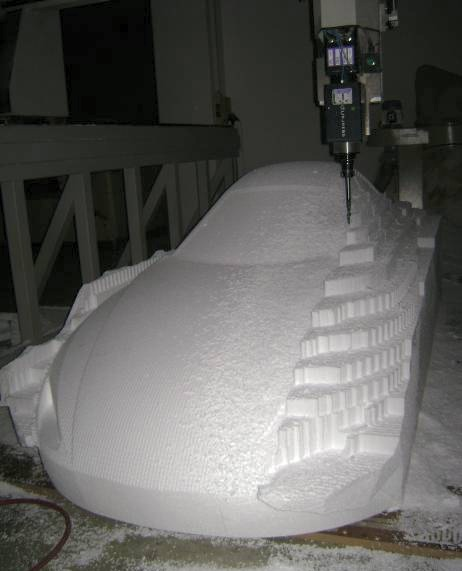
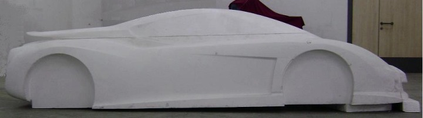
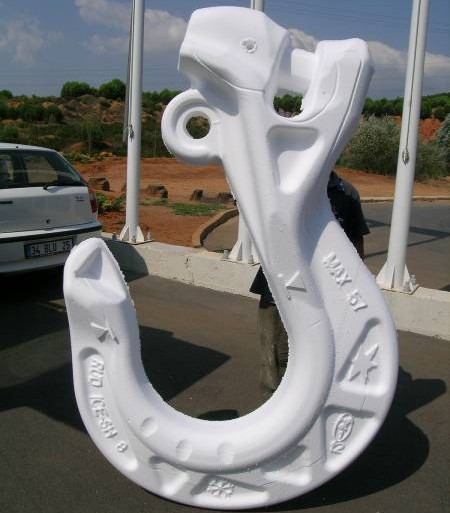
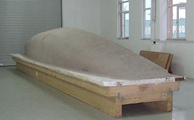
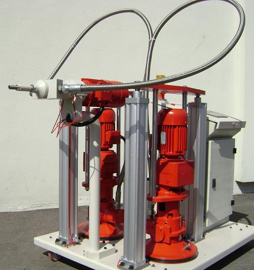

|
Diðer uygulama örnekleri



DOZ II - Epoxy model macun dispenseri
Yüksek hassasiyet isteyen, karmaþýk þekilli Model, Plug ve Kalýp üretimlerini, hýzlý ve ekonomik þekilde gerçekleþtirmek amacý ile geliþtirilmiþ, çift komponentli epoxy bazlý, yüksek viskoziteli model macunu dispenseri.
Bugün Türkiye'de model, plug ve kalýp üretiminde kullanýlan teknolojinin maliyet, kalite ve sürat açýsýndan olumsuzluklarý ilgili sektörleri bezdirmiþtir. Gerek bu nedenler, gerekse malzeme ve elektronik dünyasýndaki geliþmeler ile Modelleme Macunu ile üretim teknolojisi ön plana çýkmakta, beraberinde büyük avantajlar getirmektedir.
Bu konuda, ülkemizde üreticilerde doðmakta olan ihtiyacý deðerlendiren þirketimiz, eksikleri, malzeme özelliklerini, uygulama ve teknolojileri gayet ciddi bir biçimde inceleyerek, kendi tesislerinde projelendirilip üretilen özgün DÖZ II dispenserini hayata geçirmiþtir. Çift komponentli malzemeyi hava ile temas ettirmeden hassas bir þekilde karýþtýrarak, ýsýtmadan, kontrollü bir akýþ ile enjekte etmek üzere tasarlanmýþtýr.
Genel özellikler
- Kolay kullanýcý kontrol paneli
- Türkçe ara yüz
- CNÇ tezgahlar ile entegrasyon
- Malzemeye özel akýþkanlýk, yoðunluk ayarlarý
- Hassas devir kont rolü
- Hassas karýþým kont rolü
- Hassas basýnç kont rolü
- Simültane verim ve karýþým kont rolü
- Simültane sürat ve akýþkanlýk ayarý
- Kolay temizlenebilir dinamik SS mikser
- Yüksek basýnç emergency valf
- Hava alma
- Pnömatik varil ayýrma
Teknik özellikler
- Kont rol sistemi: Dokunmatik LCD ekran PLC
- Devir kontrol: Frekans invertor
- Karýþým: Elektrik motor tahrikli dinamik mikser
- Karýþým oraný: 25:100, 100:25 arasý oranlarda
- Valf sistemi: Ayarlý, otomatik
- Kapasite: 100:100 karýþýmda en fazla 5 litre/dakika
- Varýl kapasite: 2 adet 50 litre
- Uyarý: Basýnç, karýþým ve limit alarmlarý
- Basýnçlý hava: 6-7 bar, 400 litre/dakika
- Güç: 380 Volt, 50 Hz
MEKANO hakkýnda:
Firmamýz , yüksek teknoloji üzerine araþtýrma, geliþtirme ve üretim yapmak amacý ile 2004 yýlýnda kurulmuþ olup, Ýstanbul Anadolu yakasýndaki 6.000 metrekarelik modern tesislerinde; 20 kiþilik yönetim birimi ve 90 kiþilik uzman kadrosuyla müþterilerine dünya standartlarýnda hizmet vermektedir.
Ana üretim konusunda Numerik Kontrollü (CNC) Otomasyon, Hareket kontrol, Kopyalama ve Ýþleme becerisi ile proje bazlý tesisler kurmakta, özel amaçlý cihazlar üretmektedir.
Mekano Teknik, Freze, Su jeti, Laser, Ultrasound, Plasma teknolojilerinin baþarý ile kullanýldýðý cihazlarýný, saðlýk, reklam, kalýp, model, otomotiv, elektronik, mermer, kompozit ve aðaç iþleme, ambalaj, tekstil sektörlerinde baþarý ile pazarlamaktadýr
Amacýmýz; yüksek teknolojiyi kullanarak daha kaliteli, daha seri ve daha ucuz üretim yapabilecek tesis ve makinalarý sanayicimize kazandýrmak, Dünya piyasalarýna gururla ürün sunabilmelerine katkýda bulunmak ve her türlü çabayý sarf ederek mükemmeli yakalamaktýr.
Mekano Teknik, geleceðin yüksek teknolojide olduðuna inancý, kalite anlayýþý ve yenilikçi vizyonuyla yatýrýmlarýna aralýksýz devam edecektir.
Ýrtibat:
MEKANO Teknik San. ve Tic. Ltd. Þti.
YB 34 Parsel
Ýstanbul Deri Organize Yan Sanayi Bölgesi
Tuzla Ýstanbul
Tel: (216) 591 0818
www.mekano.com.tr
|